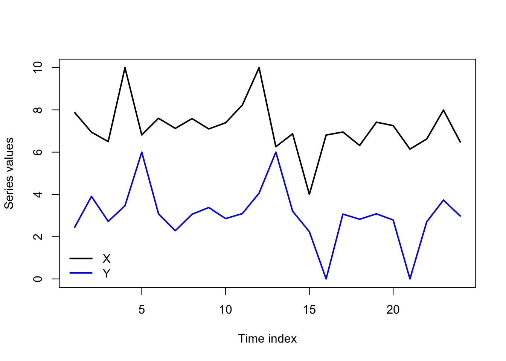

library(urca)
library(vars)Granger causality
As taught in classical experimental design courses, “causality” is a dangerous term which can only be studied within the relatively safe confines of a randomized controlled trial (RCT), such as a clinical experiment.
I agree that causality is a dangerous term. Our stakeholders always want to know whether one variable causes another, and they grow frustrated with the statistician’s reply that “correlation is not causation”. We ourselves are eager to tell the data’s story, and might feel lost as to how to prove a causal link which seems obvious. Even if we could establish causality, it’s often impossible to know whether we are observing causality, reverse causality, mutual causality, or the effects of an unobserved confounding variable which directly causes the observed variables (which do not then cause each other).
flowchart LR
A((Radicalization)) --> B((Isolation))
flowchart RL
A((Radicalization))
B((Isolation))
B --> A
flowchart LR
A((Radicalization)) <--> B((Isolation))
flowchart LR
A((Misinformation))
B((Radicalization)) x--x C((Isolation))
A --> B & C
We do not always have recourse to a RCT; we often have to make guesses at causal effects from observational studies, which classically do not permit a causal interpretation. This is particularly true in many time series contexts, for example:
To test whether Eurodollar futures contract spot prices cause or are caused by LIBOR rates, we cannot blow up the international economy by randomly choosing LIBOR rates for different days and observing the corresponding change in Eurodollar futures.
To test whether Mercury’s orbital path being “in retrograde” causes a run of misfortune in our personal lives, we cannot randomly order Mercury’s position in the heavens.
Defining Granger causality
Many techniques have been devised which attempt to lend a causal interpretation to the results of non-randomized observational studies. Within economics, the most popular pseudo-causal method has been the concept of Granger causality, first introduced in 1969 by Clive Granger. Granger causality allows for many wrinkles or edge cases, and even Granger was unsure of exactly how best to parameterize his definition, but this is a stripped-down attempt:
Note
Let \(\boldsymbol{Y}\) be a time series variable regularly observed over time index \(T = 1, 2, \ldots,N\), and let \(U_t\) represent “all the information in the universe” at time \(T=t\), or, more dangerously but more simply, all the observed information relevant to \(\boldsymbol{Y}\) at time \(T=t\).
- Base case (univariate cause, 1-ahead prediction): Let \(\boldsymbol{X}\) be a time series variable regularly observed over time index \(T = 1, 2, \ldots,N\), possibly containing information relevant to \(\boldsymbol{Y}\). Let \(U_t\backslash \boldsymbol{X}\) represent “all the information in the universe except for \(\boldsymbol{X}\)” at time \(T=t\). Then, if
\[\mathbb{V}[\hat{y}_{t+1} | U_t] \lt \mathbb{V}[\hat{y}_{t+1} | U_t\backslash \boldsymbol{X}]\]
We say that “\(\boldsymbol{X}\) Granger-causes \(\boldsymbol{Y}\)”.
- Multivariate causes: Let \(\boldsymbol{X} = \{\boldsymbol{X}_1, \ldots, \boldsymbol{X}_k\}\) be a set of time series variables regularly observed over time index \(T = 1, 2, \ldots,N\), some or all of which possibly containing information relevant to \(\boldsymbol{Y}\). Let \(U_t\backslash \boldsymbol{X}\) represent “all the information in the universe except for \(\boldsymbol{X}\)” at time \(T=t\). Then, if
\[\mathbb{V}[\hat{y}_{t+1} | U_t] \lt \mathbb{V}[\hat{y}_{t+1} | U_t\backslash \boldsymbol{X}]\]
We say that “some or all of the variables \(\boldsymbol{X}_1, \ldots, \boldsymbol{X}_k\) Granger-cause \(\boldsymbol{Y}\)”.
- h-ahead prediction: Let \(\boldsymbol{X}\) be a time series variable regularly observed over time index \(T = 1, 2, \ldots,N\), possibly containing information relevant to \(\boldsymbol{Y}\). Let \(U_t\backslash \boldsymbol{X}\) represent “all the information in the universe except for \(\boldsymbol{X}\)” at time \(T=t\). Then, if
\[\mathbb{V}[\hat{y}_{t+h} | U_t] \lt \mathbb{V}[\hat{y}_{t+h} | U_t\backslash \boldsymbol{X}]\]
We say that “\(\boldsymbol{X}\) Granger-causes h-ahead \(\boldsymbol{Y}\)”.
In all cases, the basic idea is that the information contained in the past and present values of \(\boldsymbol{X}\) improves our forecasts of the future values of \(\boldsymbol{Y}\). Granger referred to this as “predictive causality” and also “causality in levels” or “causality in means”, since the variance of \(\hat{y}_{t+h}\) will only shrink when we become more certain of the mean.1
Testing for Granger causality
How then would we know if, indeed:
\[\mathbb{V}[\hat{y}_{t+1} | U_t] \lt \mathbb{V}[\hat{y}_{t+1} | U_t\backslash \boldsymbol{X}]\]
Univariate causality
One very straightforward way is to use an ADL framework. Consider the simplest case, with one time series variable \(\boldsymbol{Y}\) potentially caused by a second time series variable \(\boldsymbol{Y}\). Consider two models:
\[\begin{aligned} M_1: \qquad y_t &= c_0 + \alpha_1 y_{t-1} + \ldots + \alpha_p y_{t-p} + \omega_t \\ \\ M_2: \qquad y_t &= c_0 + \alpha_1 y_{t-1} + \ldots + \alpha_p y_{t-p} + \beta_1 x_t + \ldots + \beta_p x_{t-p} + \omega_t \end{aligned}\]
That is, \(M_1\) is a simple AR(p) model for \(\boldsymbol{Y}\) and \(M_2\) is an autoregressive distributed lag model which adds in p lags of \(\boldsymbol{X}\), which means that \(M_1\) is nested within \(M_2\). Both of these models use a least-squares solution method, and if an F-test shows that the larger model explains significantly more of \(\boldsymbol{Y}\) than the smaller model, we will have proven that the forecasting variance of \(\hat{y_t}\) is smaller with the information in \(\boldsymbol{X}\) than without \(\boldsymbol{X}\).
Multivariate causality
We can extend this framework to see how three or more variables Granger-cause each other, or to see whether the information in two variables jointly Granger-causes a third (even if neither Granger-causes the third individually). Suppose a VAR for a vector of time series variables \(\boldsymbol{Y} = \boldsymbol{Y}_1, \ldots, \boldsymbol{Y}_K\), represented as we saw earlier:
\[\boldsymbol{y}_t = \boldsymbol{c} + \mathbf{A}_1 \boldsymbol{y}_{t-1} + \ldots + \mathbf{A}_p \boldsymbol{y}_{t-p} + \boldsymbol{\omega}_t\]
Where each \(K \times K\) matrix \(\mathbf{A}_j\) contains the autoregressive coefficients for lag \(j\):
\[\mathbf{A}_j = \left[\begin{array}{ccc} \phi_{j;1,1} & \cdots & \phi_{j;1,K} \\ \vdots & \ddots & \vdots \\ \phi_{j;K,1} & \cdots & \phi_{j;K,K} \end{array}\right]\]
Then for any pair of variables \(\boldsymbol{Y}_a\) and \(\boldsymbol{Y}_b\), we can say that \(\boldsymbol{Y}_b\) Granger causes \(\boldsymbol{Y}_a\) if any of the coefficients \(\phi_{1;a,b}, \ldots, \phi_{p;a,b}\) are nonzero (which can also be tested with a F-test).
Every software environment (R, Python, SAS, Stata, etc.) has its own packages and routines which perform Granger causality tests. The exact test is not standardized and different environments or different packages might use different likelihood frameworks or reach different p-values. Wald tests, F-tests, and ANOVA tests are all common ways forward.
Continuing the example from the VAR lecture notes, we can see some evidence that changes in income both Granger-cause and are Granger-caused by changes in consumption, though at a 1% significance threshold we would only claim that income Granger-causes consumption and not the other way around.
Code
data(UKconinc)
diffUK <- diff(as.matrix(UKconinc))
coninc.var <- VAR(diffUK,type='const',p=3,season=4)
causality(coninc.var,'incl')$Granger
Granger causality H0: incl do not Granger-cause conl
data: VAR object coninc.var
F-Test = 3.8837, df1 = 3, df2 = 212, p-value = 0.00989Code
causality(coninc.var,'conl')$Granger
Granger causality H0: conl do not Granger-cause incl
data: VAR object coninc.var
F-Test = 3.1029, df1 = 3, df2 = 212, p-value = 0.02759Cautions regarding use and interpretation
As Clive Granger himself was well aware, Granger causality is not true causality. When we say that \(\boldsymbol{X}\) Granger-causes \(\boldsymbol{Y}\), we are only using the term as a shorthand for saying, “The information in \(\boldsymbol{X}\) can be added to a linear model to decrease the forecast errors of \(\boldsymbol{Y}\).”
Still, the idea has merit, and helps to better define and test a common phenomenon in the data. Even without an RCT to prove the notion of causality to us, we notice when “shocks in \(\boldsymbol{X}\)” are quickly followed by “shocks in \(\boldsymbol{Y}\)”, and we might further notice that “shocks in \(\boldsymbol{Y}\)” are not followed by “shocks in \(\boldsymbol{X}\)”. This pattern can be measured by Granger causality, and certainly gives the appearance that \(\boldsymbol{X}\) is truly causing \(\boldsymbol{Y}\), even without a formal proof:
Code
set.seed(0209)
y <- 7 + rnorm(24,0,0.5)
x <- 3 + rnorm(24,0,0.5)
y[c(4,12,15)] <- c(10,10,4)
x[c(5,13,16,21)] <-c(6,6,0,0)
matplot(1:24,cbind(y,x),type='l',xlab='Time index',ylab='Series values',
lty=1,lwd=2,col=c('#000000','#0000ff'))
legend(x='bottomleft',legend=c('X','Y'),lwd=2,col=c('#000000','#0000ff'),bty='n')
The causality we infer can mislead us. Unobserved variables may be causing both \(\boldsymbol{X}\) and \(\boldsymbol{Y}\) at different lags, giving the false appearance that \(\boldsymbol{X}\) causes \(\boldsymbol{Y}\) (or vice versa). We might even see instances of “backwards” causality. For instance, consider a boxer who conditions in the weeks before their fights to lose or gain weight for a particular weight class. An unsophisticated analysis of the data might lead to the conclusion that “weight change Granger-causes fights”, when of course it is the upcoming fight that has caused the weight change.
I will finally caution that Granger causality is very sensitive. Adding or removing a few dozen observations, using one fewer lag or one more lag, including one more variable or not — all these choices can reverse a finding of Granger causality, so it’s best to “stress test” your findings before rushing to conclusions.
Analogous forms of Granger causality “in variances” have been proposed which describe situations in which knowledge of \(\boldsymbol{X}\) improves predictions for the variance of \(\boldsymbol{Y}\), but they are uncommon.↩︎